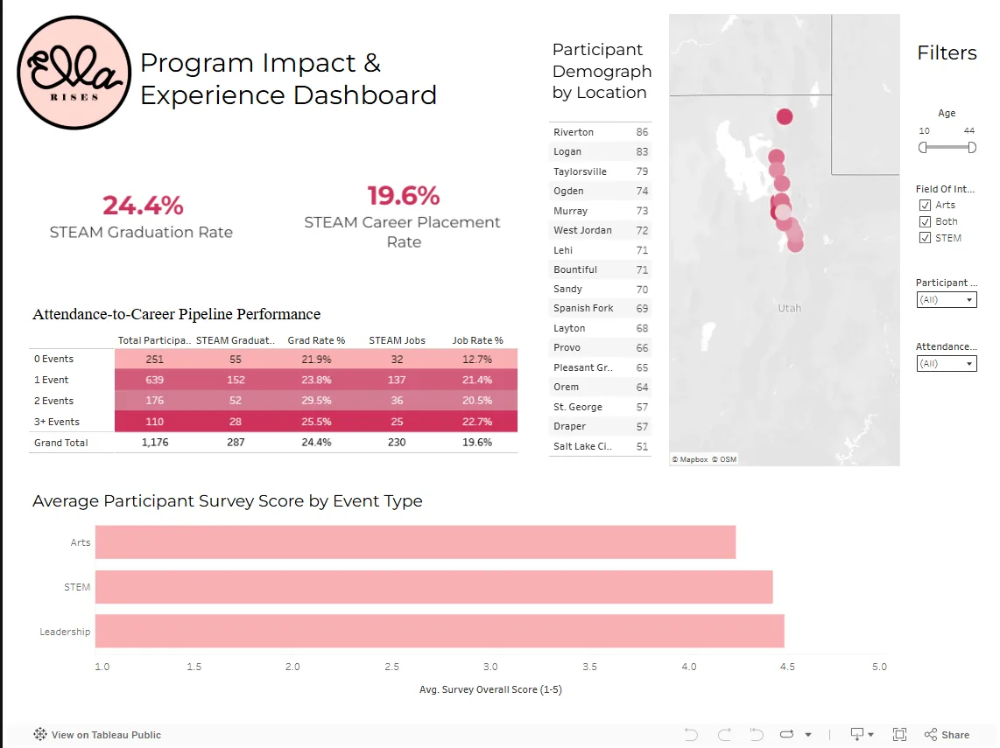

Business Intelligence · Nonprofit Analytics · Tableau
Ella Rises Impact Dashboard
An interactive Tableau dashboard for tracking participation, educational outcomes, and community engagement across Ella Rises programs for young Latina girls.

Problem
Ella Rises needed a clearer way to communicate program impact. For a nonprofit, raw event and participation data is not enough; coordinators, sponsors, and stakeholders need to see whether programs are reaching students and producing meaningful engagement.
The dashboard translates operational data into an impact story that can support program planning and funding conversations.
Approach
Audience First
Focused on measures a program coordinator or sponsor could understand quickly.
KPI Layout
Organized the dashboard around participation, outcomes, and engagement rather than raw tables.
Embedded Access
Published the dashboard in a web page so stakeholders can explore it without opening Tableau Desktop.
The result is a dashboard that frames nonprofit data as decision support: which programs are gaining traction, where engagement is strongest, and how the organization can communicate its value more clearly.
Dashboard